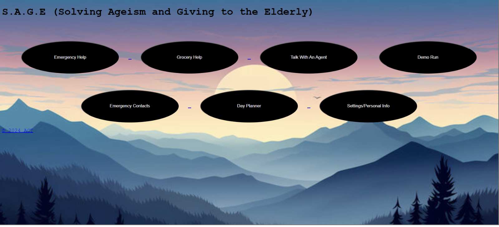

Project One
SAGE
Project Description
In this project, my group and I created SAGE during the Entrepreneurship Project. The goal was to create an app that would help elderly users complete different daily tasks. These features included a talk-to-an-agent option, a day planner, an emergency contact list, and more. This project helped me demonstrate my ability to collaborate with a team, develop an app, and create a presentation that strengthened my public speaking and presenting skills.
My Responsibilities
- Completed documentation listing our tasks and the time each task took to complete.
- Tested and developed the SAGE app while helping debug issues and identify potential security concerns.
- Revised the app and helped create a presentation for the Computer Science Essentials class.
What I Learned
Through this project, I learned how to design an app around a specific user group and improve a product through testing and revision. I also learned how important communication, planning, and teamwork are when developing a group project.